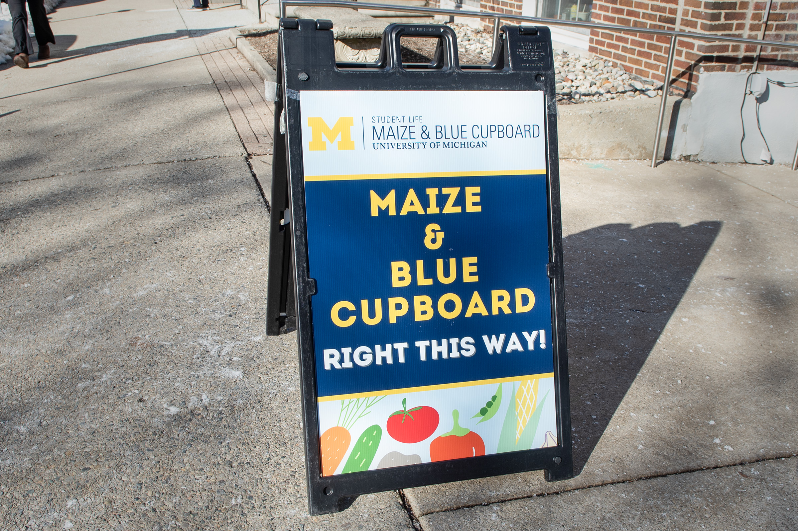
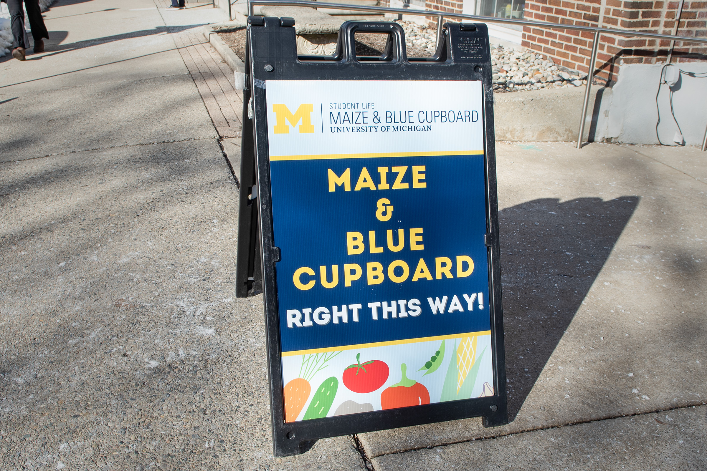

Nourishing Our Community at the University of Michigan
The Maize & Blue Cupboard is committed to ensuring that every student at the University of Michigan School of Information has access to nutritious food without worry. Understanding that food security is fundamental to academic and personal success, we provide free, accessible, and nutritious food options to our community.
Who We Serve
The Maize & Blue Cupboard is open to all students, staff, and faculty at the University of Michigan. We believe that access to healthy food is a right, not a privilege, and our services are designed to support anyone in need within our university community.
What We Offer
- Food Distribution: We offer a variety of fresh, frozen, and non-perishable items. Students can visit our location on campus to pick up ingredients and ready-to-eat meals.
- Nutritional Education: We provide resources and workshops on budget-friendly cooking, nutritional information, and meal planning to empower our community members to make healthy food choices.
- Community Engagement: Regular events and volunteer opportunities foster a sense of community and mutual support among users of the food pantry.
Visit Us
The Maize & Blue Cupboard is located centrally on campus and is open several days a week. Visit our website for current hours, location details, and how to get involved, either as a user or volunteer. Donations are always welcome and greatly appreciated, as they directly support our mission of ending hunger on campus. Together, we can create a community where everyone has access to the resources they need to thrive academically and personally at the University of Michigan School of Information.